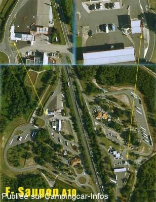

AA = Aire de services sur autoroute de :
A10 Paris=>Bordeaux SAUGON
(N° 27)
Accès/adresse :
8 km après la sortie 38, Blaye
Derrière la station-service
Derrière la station-service
Latitude : (Nord) 45.18879° Décimaux ou 45° 11′ 19′′
Longitude : (Ouest) -0.49243° Décimaux ou 0° 29′ 32′′
Tarif : Gratuit
Type de borne : Artisanale
Services :


Autres informations :

Le 29/01/2009 par
de
Xtian74
le 15/06/2009 :
Coordonnées GPS contrôlées et rectifiées.
Coordonnées GPS contrôlées et rectifiées.
de
Rolf Ca.
le 29/01/2009 :
Übernacht.-Möglichkeit auf dem Parkplatz der Rastanlage und/oder VE an der AVIA-Tankstelle,
Tel. 05 57 42 64 50
Übernacht.-Möglichkeit auf dem Parkplatz der Rastanlage und/oder VE an der AVIA-Tankstelle,
Tel. 05 57 42 64 50